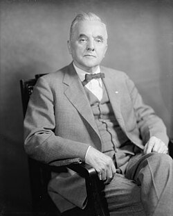
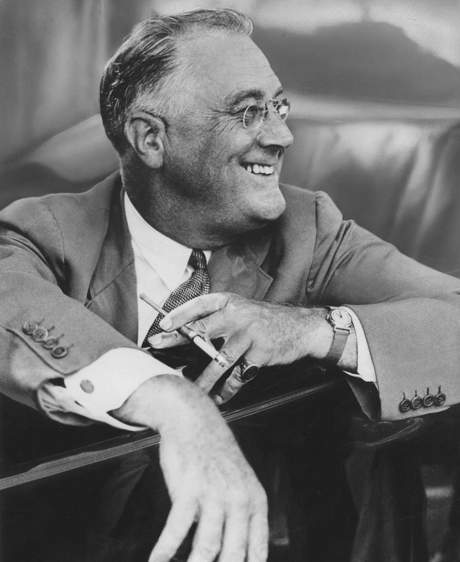
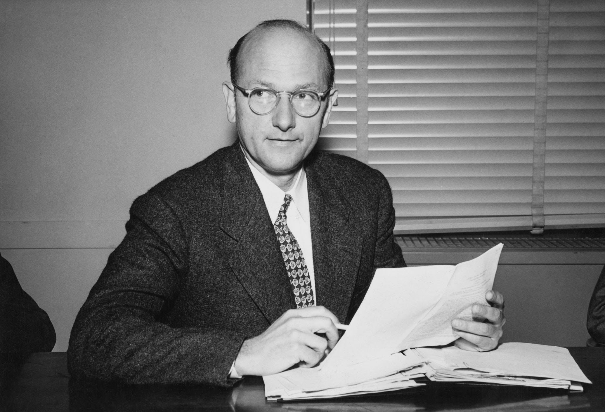

Senator George Norris

President Franklin D. Roosevelt

David Lilienthal
Senator George Norris
Norris is probably the most important figure in the story of American hydropower. The major achievement of his career was the Tennessee Valley Authority Act of 1933 - a plan he conceived and fought for several years to bring to fruition. He introduced legislation repeatedly through the 1920s and early 1930s, got vetoed twice, and kept going anyway. He was known as an independent who said he "would rather be right than regular," and consistently made decisions based on principle rather than party loyalty. He believed the federal government should control natural resources so the greatest number of citizens could benefit, and he never moved off that position regardless of who was blocking him.
President Franklin D. Roosevelt
Where Norris spent years building the idea, Roosevelt provided the political power to make it happen. During his first hundred days in office, Roosevelt worked expeditiously with Congress to enact a wide range of legislation, including the creation of the TVA. He envisioned it as a template for future regional redevelopment and the infrastructure his administration built was ready when the country needed power during World War II. His leadership style was defined by decisive action under pressure - he didn't wait for perfect conditions.
David Lilienthal
Lilienthal was the operational leader of the TVA - responsible for running it day to day. Under his direction, TVA workers erected a series of dams to harness the Tennessee River, and the arrival of electricity eased the lives of the people who lived there while encouraging industrial growth. Under his leadership, the TVA became the global model for the United States' later efforts to help modernize agrarian societies in the developing world. Roosevelt and Norris set the vision - Lilienthal executed it.
Key leadership traits
The success of 20th-century hydropower was driven by Depression-era desperation, rural inequality, the demands of a world war, and a national belief in progress through technology. Those forces created the political will, the funding, and the public support that made these projects possible. The engineering was impressive - but the culture is what put it in motion.
What We Want to Improve
- The most relevant takeaway for our own development is persistence under pushback. In any professional setting, ideas get rejected and projects hit resistance. Norris's example shows that continuing to advocate for a well-reasoned idea rather than giving up after the first setback is what actually gets things done.
- Cross-functional communication is another area to work on. The TVA required engineers, politicians, and construction workers to all operate toward the same goal. Being able to communicate clearly with people outside your own discipline becomes more important the larger the project gets.
- Finally, decisiveness. Roosevelt didn't wait for perfect conditions before acting. In engineering and professional environments, learning to make good decisions with the available information - rather than stalling - is a habit worth building early.
Summary
The success of 20th-century hydropower came down in large part to Norris, Roosevelt, and Lilienthal, each playing a different role but all contributing to the same outcome. The traits they showed - persistence, decisiveness, and clarity of purpose - are the same ones that matter in any engineering or professional context today.